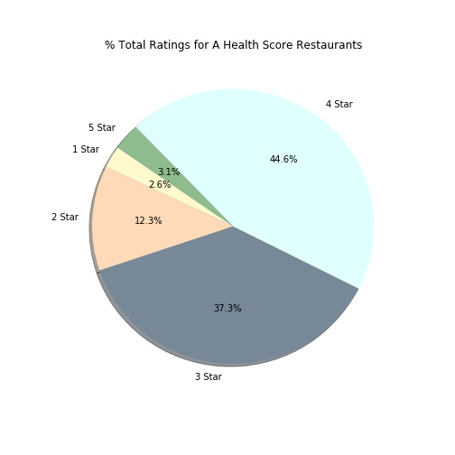
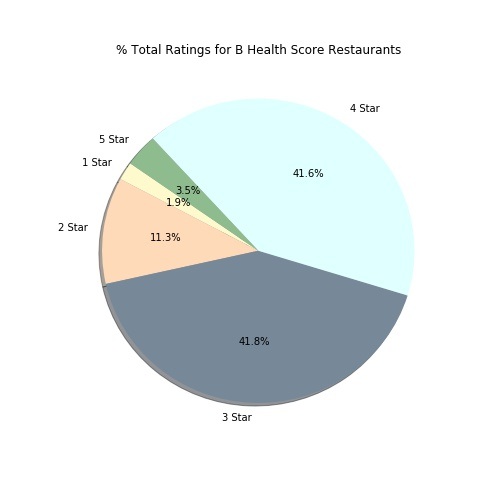

Even after breaking down by health inspection grade, no trend was apparent on initial review. After comparing scores and ratings, we then compared each health inspection grade to Yelp reviews. The most interesting thing we see is that for meh, 3-3.5 star Yelp-rated restaurants, that the majority also have a C inspection grade.
Inspection grade and corresponding percentages of Yelp stars:

